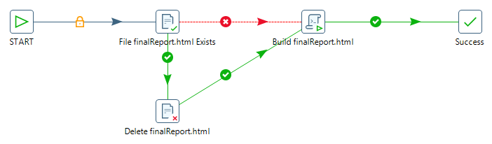

Reporte Raw¶
1. OBJETIVO¶
El presente documento buscar explicar y detallar el proceso que genera el Reporte a Nivel Raw.
2. ALCANCE¶
Áreas involucradas: Performance de Red
3. DEFINICIONES¶
- Falda: Servidor UNIX en donde se importan los XML desde el proveedor, y en donde se encuentra Smart. El nombre es falda.claro.amx.
4. DESCRIPCIÓN GENERAL¶
REPORTE A NIVEL RAW
Este reporte se utiliza para verificar si están todos los datos provenientes desde los XML ya insertados en la base de datos.
5. MACRO FLUJO DEL PROCESO¶
6. DESCRIPCIÓN DETALLADA¶
6.1. Datos de origen y datos destino¶
- Server Origen y Path: falda.claro.amx /calidad/CYR
- Frecuencia actualización: Frecuencia diaria
- Tipo de Archivo de Salida: HTML
6.2. Shell Copiar Archivos Origen a Destino y limpieza de los mismos¶
Los scripts son los siguientes:
6.3. Listado de Tablas Utilizadas¶
SCRIPT: STATUS_GSM_GRAL.SQL
o MULTIVENDOR_OBJECT2
o CALIDAD_STATUS_REFERENCES
o GSM_C_NSN_TRAFFIC_HOU2
o GSM_C_NSN_HO_HOU2
o GSM_C_NSN_SERVICE_HOU2
o GSM_C_NSN_RESAVAIL_HOU2
o GSM_C_NSN_RESACC_HOU2
o GSM_C_NSN_FER_HOU2
o GSM_C_NSN_PCU_HOU2
o GSM_C_NSN_QOSPCL_HOU2
o GSM_C_NSN_RXQUAL_HOU2
SCRIPT: STATUS_UMTS_GRAL.SQL
o MULTIVENDOR_OBJECT2
o CALIDAD_STATUS_REFERENCES
o UMTS_C_NSN_SERVLEV_MNC1_RAW
o UMTS_C_NSN_TRAFFIC_MNC1_RAW
o UMTS_C_NSN_CELLRES_MNC1_RAW
o UMTS_C_NSN_HSDPAW_MNC1_RAW
o UMTS_C_NSN_CELLTP_MNC1_RAW
o UMTS_C_NSN_RRC_MNC1_RAW
o UMTS_C_NSN_INTSYSHO_MNC1_RAW
o UMTS_C_NSN_SOFTHO_MNC1_RAW
o UMTS_C_NSN_INTERSHO_MNC1_RAW
o UMTS_C_NSN_CELTPW_MNC1_RAW
o UMTS_C_NSN_CPICHQ_MNC1_RAW
o UMTS_C_NSN_L3IUB_MNC1_RAW
o UMTS_C_NSN_PKTCALL_MNC1_RAW
SCRIPT: STATUS_LTE_GRAL.SQL
o MULTIVENDOR_OBJECT2
o CALIDAD_STATUS_REFERENCES
o NOKLTE_PS_LCELAV_MNC1_RAW
o NOKLTE_PS_LCELLD_MNC1_RAW
o NOKLTE_PS_LCELLT_MNC1_RAW
o NOKLTE_PS_LEPSB_MNC1_RAW
o NOKLTE_PS_LPQDL_MNC1_RAW
o NOKLTE_PS_LPQUL_MNC1_RAW
o NOKLTE_PS_LRRC_MNC1_RAW
o NOKLTE_PS_LUEST_MNC1_RAW
6.4. Pentaho¶
Estructura del proyecto:

- Proceso Pentaho End to End

- Proceso Pentaho GetStatusGral
En este proceso se ejecutan las 3 tecnologías, en el orden:
- UMTS
- GSM
- LTE

- Proceso Pentaho CreateFileMailContent
En este proceso se Valida la existencia del HTML para construir el Reporte que será enviado por email, en caso de no existir el HTML, se crea.
7. REPROCESO MANUAL¶
Para realizar el reproceso a nivel raw hacer clic_aqui
El email muestra la información de la siguiente manera:
8. CONTROL DE CAMBIOS¶
| Fecha | Responsable | Ticket Jira | Detalle | Repositorio |
|---|---|---|---|---|